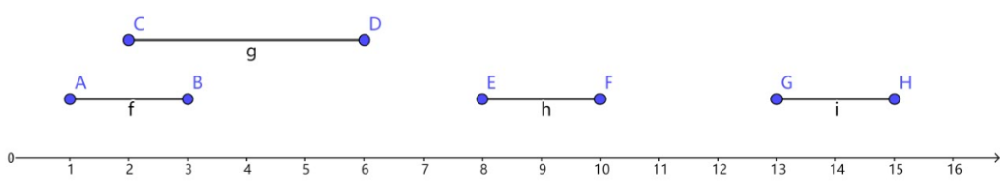
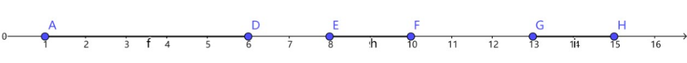
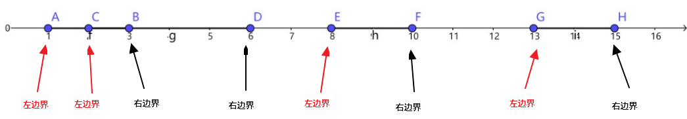

LeetCode#56 Merge Intervals
Given a collection of intervals, merge all overlapping intervals.
For example,
Given [1,3],[2,6],[8,10],[15,18],
return [1,6],[8,10],[15,18].
分析
题目的意思是合并交集。假设有集合组[1,3],[2,6],[8,10],[15,18]，如下图：

将这几个集合合并后如下：

从坐标轴中很容易可以得到灵感，那就是创建一个数组array，将数组中所有的值初始化为0，遍历所有的集合，将集合范围内的所有数作为下标，将这些下标对应的array的值置为1。最后遍历数组，将连续的1认为一个集合，将集合的边界输出即可。
但是仔细思考就会发现，虽然可以通过遍历集合找到最大值和最小值，以此确定数组的边界。但是由于题目没有规定集合的范围，得出的数组长度可能太大，会出现内存溢出，因此此方法行不通。
让我们将合并过程倒退一步：

将左右边界标出来，很容易就可以看出，对于每一个合并之后的集合，总是包含相同个数的左右边界。那么我们是不是可以通过记录左右边界，并从小到大遍历所有的边界，再使用一个整数count来计算左右边界出现的个数，出现左边界则count + 1，右边界则count - 1。这样的话，当count = 0的时候，就是遍历完了一个集合。如下：1
2
3
4
5
6
7
8
9
10
11
12
13
14
15
16
17
18
19
20
21
22
23
24
25
26
27
28
29
30
31
32
33
34
35
36
37
38
39
40
41
42
43Struct Interval {
start // start is the left edge of this set
end // end is the right edge of this set
Interval(s, e)
start = s
end = e
}
List<Interval> merge(intervals) // intervals is a list of interval before merged
min = Integer.MAX_VALUE
max = Integer.MIN_VALUE
leftEdges = new Map(); // map的key是各个集合的左边界，value是左边界出现的次数
rightEdges = new Map(); // map的key是各个集合右边界，value是右边界出现的次数
for (interval in intervals)
if (interval.end > max)
max = interval.end
if (interval.start < min)
min = interval.start
leftEdges.put(interval.start, leftEdges.getOrDefault(interval.start, 0) + 1)
rightEdges.put(interval.end, rightEdges.getOrDefault(interval.end, 0) + 1)
count = 0
start = 0
result = new List(); // List是保存合并后的Interval的集合
for (i = min; i < max; i++)
int leftCount = leftEdges.getOrDefault(i, 0)
if (leftCount > 0)
if (count = 0)
start = i
count += leftCount
int rightCount = rightEdges.getOrDefault(i, 0)
if (rightCount > 0)
count -= rightCount
if (count = 0)
result.add(new Interval(start, i))
return result
由于以上使用了两个map，每访问一个i都要查询两个map，因此速度上会有些慢。既然是计算左右边界出现的次数相等，那么我们完全可以将结果计算出来并保存到一个map中。因为同一个数可能是一个集合的左边界的同时，也是另一个集合的右边界，因此当这个数是左边界时，就将map中对应值+1，否则就-1。最后按照上述代码遍历以min和max为边界，循环取出map中的值，并与count相加，当运算结果为count = 0，就可以输出一个合并后的集合。伪代码如下：1
2
3
4
5
6
7
8
9
10
11
12
13
14
15
16
17
18
19
20
21
22
23
24
25
26
27
28
29
30
31
32
33
34
35
36
37
38
39
40
41List<Interval> merge(intervals) // intervals is a list of interval before merged
min = Integer.MAX_VALUE
max = Integer.MIN_VALUE
edges = new Map(); // map的key是各个集合的边界，value是该边界出现的整合次数
// 即作为左边界出现的次数减去作为右边界出现的次数）
for (interval in intervals)
if (interval.end > max)
max = interval.end
if (interval.start < min)
min = interval.start
edges.put(interval.start, edges.getOrDefault(interval.start, 0) + 1)
edges.put(interval.end, edges.getOrDefault(interval.end, 0) - 1)
count = 0
start = 0
result = new List(); // List是保存合并后的Interval的集合
for (i = min; i < max; i++)
// 如果这个数不是任何边界，则跳过
if (!edges.contains(i))
continue
int c = edges.getOrDefault(i, 0)
// 如果一个没有与其他任何集合有交集的集合的左右边界相同，
// 那就直接将其添加到结果中
if (c = 0 && count = 0)
list.add(new Interval(i, i))
continue
if (count = 0)
start = i
count = c
else
count += c
if (count = 0) // 结果为0，说明遇到了合并后的集合右边界
list.add(new Interval(start, i))
return result